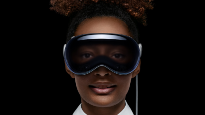

<section class="blog-page pb-18 py-lg-30">
  <div class="container">
    <div class="row justify-content-lg-between mb-12 mb-md-18">
      <div class="col-lg-3 px-0 px-md-4 bg-primary-100">
        <ul class="blog-page_menu pt-6 pb-6 pl-4 pr-4 d-flex justify-content-between align-items-center flex-lg-column align-items-lg-start justify-content-lg-start
        pl-lg-18 pr-lg-0 pt-lg-18 pb-lg-18 position-lg-sticky top-lg-10">
          <li class="flex-shrink-0 mb-lg-10">
            <a href="#" class="active text-primary-600 fs-lg-4 pb-1">全部文章</a>
          </li>
          <li class="flex-shrink-0">
            <a href="#" class="text-primary-600 fs-lg-4 pb-1">UI/UX 新知</a>
          </li>
          <li class="flex-shrink-0">
            <a href="#" class="text-primary-600 fs-lg-4 pb-1">數位產品設計</a>
          </li>
          <li class="flex-shrink-0">
            <a href="#" class="text-primary-600 fs-lg-4 pb-1">平面設計</a>
          </li>
          <li class="flex-shrink-0">
            <a href="#" class="text-primary-600 fs-lg-4 pb-1">前端開發</a>
          </li>
        </ul>
      </div>
      <div class="col-lg-8 pt-10 pt-lg-0 order-lg-first">
        <div class="text-primary-500 d-flex justify-content-between justify-content-md-start
          mb-5 mb-lg-12">
          <p>數位產品設計 <span class="d-none d-md-inline mx-2"> / </span></p>
          <p>2023/09/20 發佈</p>
        </div>
        <h2 class="text-center fs-4 lh-sm fw-bold mb-5 fs-md-2 mb-md-7">
          虛擬實境 (VR) 介面設計對使用者沈浸感影響的研究
        </h2>
        <p class="lh-sm text-center mb-7 fs-md-4 mb-md-15">- 探索虛擬實境技術的現狀與前景 -</p>
        <p class="fs-5 mb-10 mb-md-12">
          在當今數位科技的快速發展下，虛擬實境（VR）技術日益受到關注。VR技術為使用者提供了身臨其境的體驗，並在多個領域中得到應用，如遊戲、教育、醫療等。然而，要實現真正的沈浸感需要考慮多個因素，其中介面設計是至關重要的一環。本研究旨在探討不同介面設計對使用者在虛擬環境中的沈浸感的影響，以期為優化VR技術的使用者體驗提供參考。</p>
        <h3 class="fs-5 fw-bold mb-5 fs-md-4">大眾看法</h3>
        <p class="fs-5 mb-10 mb-md-12">
          虛擬實境技術近年來受到越來越多人的關注和接受。人們對VR技術的潛力持樂觀態度，認為它能夠提供全新的體驗和娛樂方式，並在教育、訓練等領域中有著廣泛的應用前景。然而，也有一些人擔心虛擬實境技術的成熟度和可靠性，對其潛在風險抱有顧慮。
        </p>
        <h3 class="fs-5 fw-bold mb-5 fs-md-4">現行產品</h3>
        <p class="fs-5 mb-10 mb-md-12">
          目前市面上有許多虛擬實境產品，如Vision Pro、Oculus Rift、HTC Vive、PlayStation
          VR等。這些產品在硬件性能、軟件支持和使用者體驗等方面存在差異，而介面設計是影響使用者體驗的重要因素之一。不同的介面設計可以影響使用者的操作方式、感知真實度以及沈浸感。
        </p>
        <div class="row mb-10 mb-md-12">
          <div class="col-md-6 mb-10 mb-md-7">
            
            <p class="text-center text-primary-500">Vision Pro</p>
          </div>
          <div class="col-md-6 mb-10 mb-md-7">
            
            <p class="text-center text-primary-500">Oculus Rift</p>
          </div>
          <div class="col-md-6 mb-10">
            
            <p class="text-center text-primary-500">HTC Vive</p>
          </div>
          <div class="col-md-6">
            
            <p class="text-center text-primary-500">PlayStation VR</p>
          </div>
        </div>
        <h3 class="fs-5 fw-bold mb-5 fs-md-4">技術創新</h3>
        <p class="fs-5 mb-10 mb-md-12">
          隨著硬件技術的不斷進步，VR設備的性能和功能也在不斷提升。高解析度的顯示器、感應器、追蹤技術等創新技術的應用，使得虛擬實境的感知和互動性能夠更加真實和流暢。然而，技術創新也帶來了一些挑戰，例如圖像質量、感知延遲等問題仍然存在，需要進一步解決。
          技術瓶頸：儘管虛擬實境技術取得了巨大進步，但仍然存在一些技術瓶頸需要克服。例如，許多使用者報告在使用VR設備時出現眩暈和不適感，這與感知延遲和畫面模糊等問題有關。此外，虛擬實境的內容和應用也需要更多的創新和豐富，以滿足不同使用者的需求。
        </p>
        <h3 class="fs-5 fw-bold mb-5 fs-md-4">技術瓶頸</h3>
        <p class="fs-5 mb-10 mb-md-12">
          儘管虛擬實境技術取得了巨大進步，但仍然存在一些技術瓶頸需要克服。例如，許多使用者報告在使用VR設備時出現眩暈和不適感，這與感知延遲和畫面模糊等問題有關。此外，虛擬實境的內容和應用也需要更多的創新和豐富，以滿足不同使用者的需求。
        </p>
        <h3 class="fs-5 fw-bold mb-5 fs-md-4">未來展望</h3>
        <p class="fs-5 mb-10 mb-md-12">
          未來，虛擬實境技術將繼續向前發展。我們可以期待更加先進的硬件設備和更加豐富多彩的虛擬內容。同時，介面設計也將繼續演進，以提供更加直觀和便捷的操作方式，進一步增強使用者的沈浸感和參與感。總的來說，虛擬實境技術的未來是充滿希望和潛力的，我們期待著看到它在各個領域中的廣泛應用和發展。
        </p>
        <p>Noel 主筆</p>
      </div>
    </div>
    <div class="border-top pt-12 px-6h">
      <h2 class="fs-4 lh-sm fw-bold text-center mb-12 fs-md-3 text-md-start">相關文章</h2>
      <ul class="row">
        <li class="col-md-6 col-lg-4 mb-13">
          <div class="card__img-top">
            <div class="image-area h-220 h-md-234">
              
            </div>
            <div class="pt-5 px-2 d-flex flex-column">
              <div class="d-flex justify-content-between align-items-center mb-5 mb-md-0">
                <p class="text-primary-600">2024/02/10</p>
                <div class="py-1 px-4 bg-primary-200 rounded-3 order-md-first">UI/UX 新知</div>
              </div>
              <h3 class="fs-5 lh-sm fw-bold mb-md-5 order-md-first">
                Vision Pro 登場！Vision Pro UI/UX 設計重點大公開 (上)
              </h3>
            </div>
          </div>
        </li>
        <li class="col-md-6 col-lg-4 mb-13">
          <div class="card__img-top">
            <div class="image-area h-220 h-md-234">
              
            </div>
            <div class="pt-5 px-2 d-flex flex-column">
              <div class="d-flex justify-content-between align-items-center mb-5 mb-md-0">
                <p class="text-primary-600">2023/07/100</p>
                <div class="py-1 px-4 bg-primary-200 rounded-3 order-md-first">UI/UX 新知</div>
              </div>
              <h3 class="fs-5 lh-sm fw-bold mb-md-5 order-md-first">
                Vision Pro 來了！UIUX 設計師的未來在哪裡？
              </h3>
            </div>
          </div>
        </li>
      </ul>
    </div>
  </div>
</section>